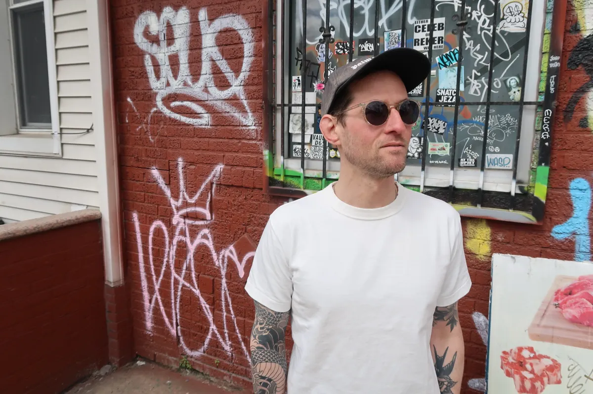

About
Black Thread Club is about staying intentional — darker palettes, clean silhouettes, and timeless pieces that feel personal, not performative. I'm Jesse. I live in Brooklyn and grew up playing in heavy metal bands before falling in love with post-punk, new wave, and the style that came with it. I’m a longtime MMA fan and a former Brazilian Jiu Jitsu instructor. These days, I drink matcha in the morning and build my wardrobe around thrifted finds and pieces that balance budget, comfort, and edge. This site is where I document what I actually wear — modern essentials with a darker aesthetic, influenced by music, street style, and a sense of self.